2023 Higher Human Biology - Paper 1 questions
Source: Scottish Qualifications Authority (SQA) / Qualifications Scotland. This is a StemInteract HTML companion, not an official HTML edition. Extracted text is supplied alongside unaltered page images; use the images or original PDF for table layout, diagrams and symbols.
Jump to a question
PDF page 1
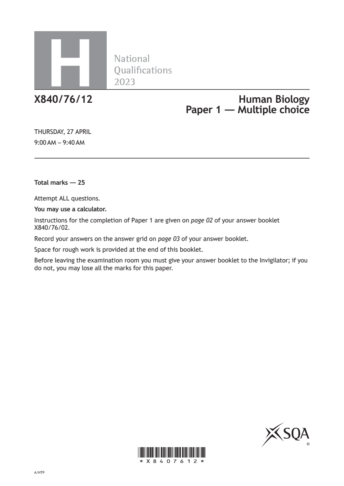
Selectable page text
H
National
Qualications
2023
X840/76/12 Human Biology
Paper 1 — Multiple choice
THURSDAY, 27 APRIL
9:00 AM – 9:40 AM
Total marks — 25
Attempt ALL questions.
You may use a calculator.
Instructions for the completion of Paper 1 are given on page 02 of your answer booklet
X840/76/02.
Record your answers on the answer grid on page 03 of your answer booklet.
Space for rough work is provided at the end of this booklet.
Before leaving the examination room you must give your answer booklet to the Invigilator; if you
do not, you may lose all the marks for this paper.
©
*X8407612*
A/HTPPDF page 2
Question 1Question 2Question 3Question 4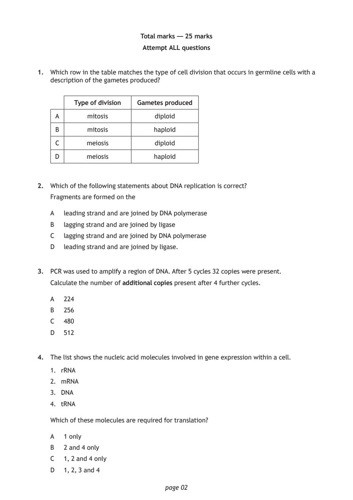
Selectable page text
Total marks — 25 marks
Attempt ALL questions
1. Which row in the table matches the type of cell division that occurs in germline cells with a
description of the gametes produced?
Type of division Gametes produced
A mitosis diploid
B mitosis haploid
C meiosis diploid
D meiosis haploid
2. Which of the following statements about DNA replication is correct?
Fragments are formed on the
A leading strand and are joined by DNA polymerase
B lagging strand and are joined by ligase
C lagging strand and are joined by DNA polymerase
D leading strand and are joined by ligase.
3. PCR was used to amplify a region of DNA. After 5 cycles 32 copies were present.
Calculate the number of additional copies present after 4 further cycles.
A 224
B 256
C 480
D 512
4. The list shows the nucleic acid molecules involved in gene expression within a cell.
1. rRNA
2. mRNA
3. DNA
4. tRNA
Which of these molecules are required for translation?
A 1 only
B 2 and 4 only
C 1, 2 and 4 only
D 1, 2, 3 and 4
page 02PDF page 3
Question 5Question 6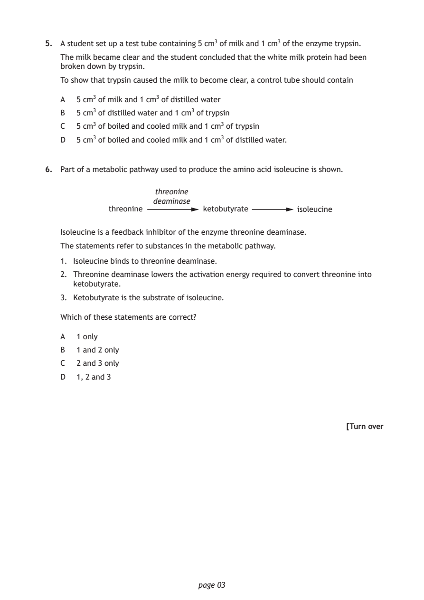
Selectable page text
5. A student set up a test tube containing 5 cm3 of milk and 1 cm3 of the enzyme trypsin.
The milk became clear and the student concluded that the white milk protein had been
broken down by trypsin.
To show that trypsin caused the milk to become clear, a control tube should contain
A 5 cm3 of milk and 1 cm3 of distilled water
B 5 cm3 of distilled water and 1 cm3 of trypsin
C 5 cm3 of boiled and cooled milk and 1 cm3 of trypsin
D 5 cm3 of boiled and cooled milk and 1 cm3 of distilled water.
6. Part of a metabolic pathway used to produce the amino acid isoleucine is shown.
threonine
deaminase
threonine ketobutyrate isoleucine
Isoleucine is a feedback inhibitor of the enzyme threonine deaminase.
The statements refer to substances in the metabolic pathway.
1. Isoleucine binds to threonine deaminase.
2. Threonine deaminase lowers the activation energy required to convert threonine into
ketobutyrate.
3. Ketobutyrate is the substrate of isoleucine.
Which of these statements are correct?
A 1 only
B 1 and 2 only
C 2 and 3 only
D 1, 2 and 3
[Turn over
page 03PDF page 4
Question 7Question 8Question 9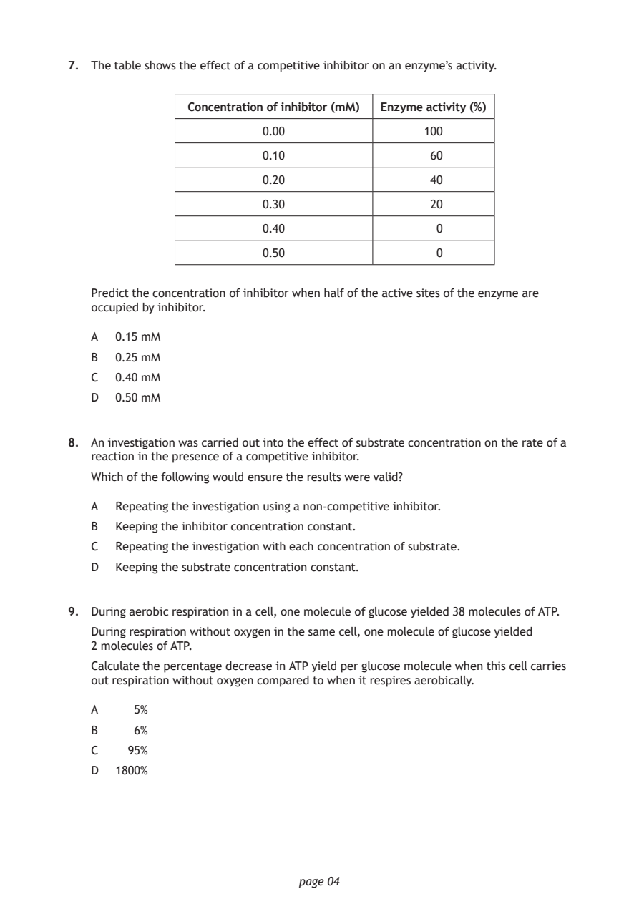
Selectable page text
7. The table shows the effect of a competitive inhibitor on an enzyme’s activity.
Concentration of inhibitor (mM) Enzyme activity (%)
0.00 100
0.10 60
0.20 40
0.30 20
0.40 0
0.50 0
Predict the concentration of inhibitor when half of the active sites of the enzyme are
occupied by inhibitor.
A 0.15 mM
B 0.25 mM
C 0.40 mM
D 0.50 mM
8. An investigation was carried out into the effect of substrate concentration on the rate of a
reaction in the presence of a competitive inhibitor.
Which of the following would ensure the results were valid?
A Repeating the investigation using a non‑competitive inhibitor.
B Keeping the inhibitor concentration constant.
C Repeating the investigation with each concentration of substrate.
D Keeping the substrate concentration constant.
9. During aerobic respiration in a cell, one molecule of glucose yielded 38 molecules of ATP.
During respiration without oxygen in the same cell, one molecule of glucose yielded
2 molecules of ATP.
Calculate the percentage decrease in ATP yield per glucose molecule when this cell carries
out respiration without oxygen compared to when it respires aerobically.
A 5%
B 6%
C 95%
D 1800%
page 04PDF page 5
Question 10Question 11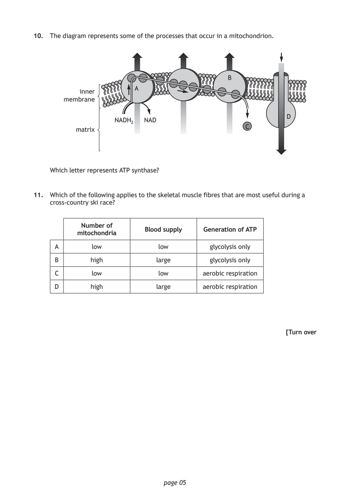
Selectable page text
10. The diagram represents some of the processes that occur in a mitochondrion.
B
A
inner
membrane
D
NADH NAD
2
C
matrix
Which letter represents ATP synthase?
11. Which of the following applies to the skeletal muscle fibres that are most useful during a
cross‑country ski race?
Number of
Blood supply Generation of ATP
mitochondria
A low low glycolysis only
B high large glycolysis only
C low low aerobic respiration
D high large aerobic respiration
[Turn over
page 05PDF page 6
Question 12Question 13Question 14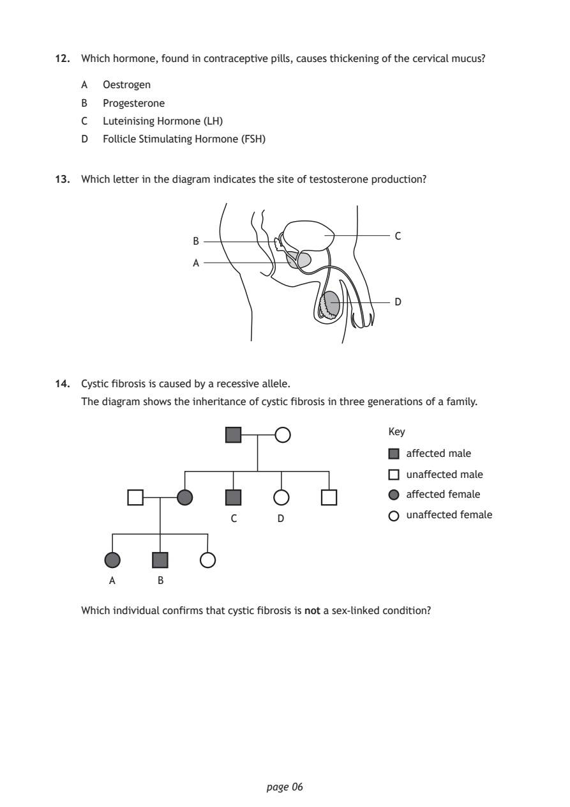
Selectable page text
12. Which hormone, found in contraceptive pills, causes thickening of the cervical mucus?
A Oestrogen
B Progesterone
C Luteinising Hormone (LH)
D Follicle Stimulating Hormone (FSH)
13. Which letter in the diagram indicates the site of testosterone production?
C
B
A
D
14. Cystic fibrosis is caused by a recessive allele.
The diagram shows the inheritance of cystic fibrosis in three generations of a family.
Key
affected male
unaffected male
affected female
unaffected female
C D
A B
Which individual confirms that cystic fibrosis is not a sex‑linked condition?
page 06PDF page 7
Question 15Question 16Question 17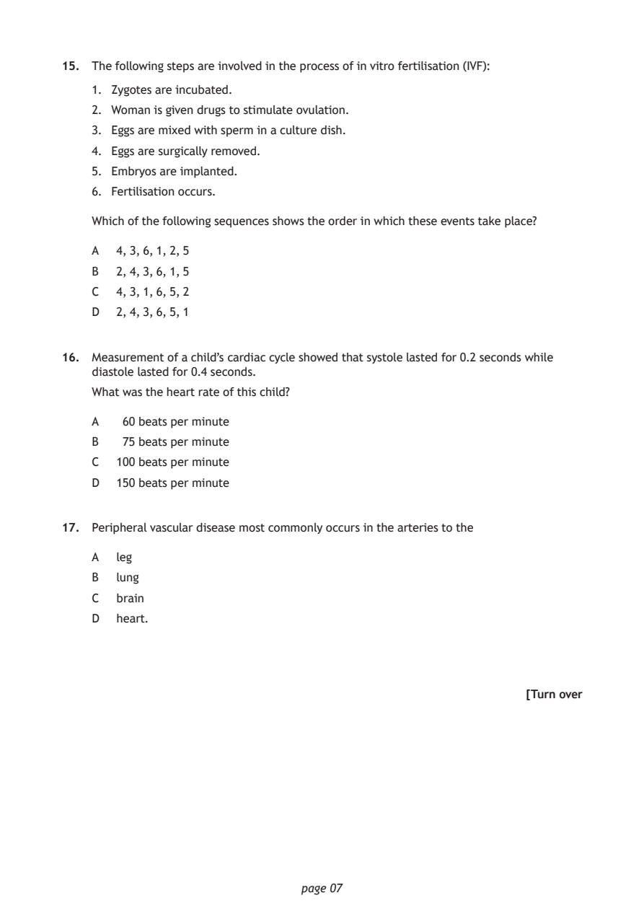
Selectable page text
15. The following steps are involved in the process of in vitro fertilisation (IVF):
1. Zygotes are incubated.
2. Woman is given drugs to stimulate ovulation.
3. Eggs are mixed with sperm in a culture dish.
4. Eggs are surgically removed.
5. Embryos are implanted.
6. Fertilisation occurs.
Which of the following sequences shows the order in which these events take place?
A 4, 3, 6, 1, 2, 5
B 2, 4, 3, 6, 1, 5
C 4, 3, 1, 6, 5, 2
D 2, 4, 3, 6, 5, 1
16. Measurement of a child’s cardiac cycle showed that systole lasted for 0.2 seconds while
diastole lasted for 0.4 seconds.
What was the heart rate of this child?
A 60 beats per minute
B 75 beats per minute
C 100 beats per minute
D 150 beats per minute
17. Peripheral vascular disease most commonly occurs in the arteries to the
A leg
B lung
C brain
D heart.
[Turn over
page 07PDF page 8
Question 18Question 19Question 20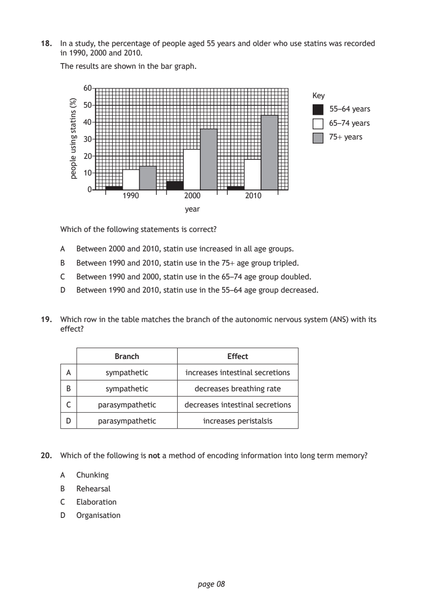
Selectable page text
18. In a study, the percentage of people aged 55 years and older who use statins was recorded
in 1990, 2000 and 2010.
The results are shown in the bar graph.
page 08
)%(
snitats
gnisu
elpoep
60
Key
50
55–64 years
40 65–74 years
30 75+ years
20
10
0
1990 2000 2010
year
Which of the following statements is correct?
A Between 2000 and 2010, statin use increased in all age groups.
B Between 1990 and 2010, statin use in the 75+ age group tripled.
C Between 1990 and 2000, statin use in the 65–74 age group doubled.
D Between 1990 and 2010, statin use in the 55–64 age group decreased.
19. Which row in the table matches the branch of the autonomic nervous system (ANS) with its
effect?
Branch Effect
A sympathetic increases intestinal secretions
B sympathetic decreases breathing rate
C parasympathetic decreases intestinal secretions
D parasympathetic increases peristalsis
20. Which of the following is not a method of encoding information into long term memory?
A Chunking
B Rehearsal
C Elaboration
D OrganisationPDF page 9
Question 21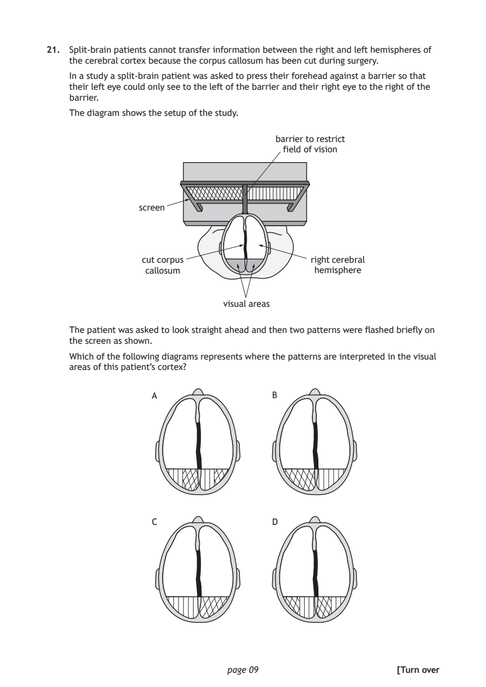
Selectable page text
21. Split‑brain patients cannot transfer information between the right and left hemispheres of
the cerebral cortex because the corpus callosum has been cut during surgery.
In a study a split‑brain patient was asked to press their forehead against a barrier so that
their left eye could only see to the left of the barrier and their right eye to the right of the
barrier.
The diagram shows the setup of the study.
barrier to restrict
field of vision
screen
cut corpus right cerebral
callosum hemisphere
visual areas
The patient was asked to look straight ahead and then two patterns were flashed briefly on
the screen as shown.
Which of the following diagrams represents where the patterns are interpreted in the visual
areas of this patient’s cortex?
A B
C D
page 09 [Turn overPDF page 10
Question 22Question 23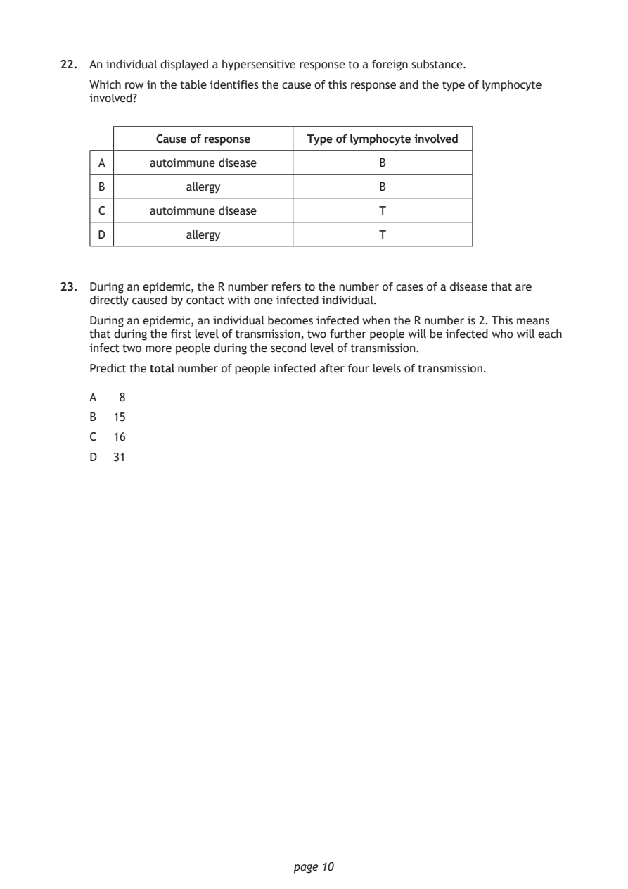
Selectable page text
22. An individual displayed a hypersensitive response to a foreign substance.
Which row in the table identifies the cause of this response and the type of lymphocyte
involved?
Cause of response Type of lymphocyte involved
A autoimmune disease B
B allergy B
C autoimmune disease T
D allergy T
23. During an epidemic, the R number refers to the number of cases of a disease that are
directly caused by contact with one infected individual.
During an epidemic, an individual becomes infected when the R number is 2. This means
that during the first level of transmission, two further people will be infected who will each
infect two more people during the second level of transmission.
Predict the total number of people infected after four levels of transmission.
A 8
B 15
C 16
D 31
page 10PDF page 11
Question 24Question 25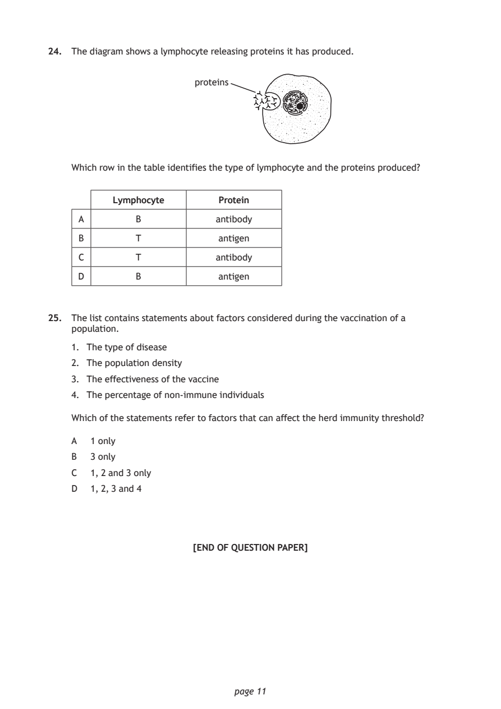
Selectable page text
24. The diagram shows a lymphocyte releasing proteins it has produced.
proteins
Which row in the table identifies the type of lymphocyte and the proteins produced?
Lymphocyte Protein
A B antibody
B T antigen
C T antibody
D B antigen
25. The list contains statements about factors considered during the vaccination of a
population.
1. The type of disease
2. The population density
3. The effectiveness of the vaccine
4. The percentage of non‑immune individuals
Which of the statements refer to factors that can affect the herd immunity threshold?
A 1 only
B 3 only
C 1, 2 and 3 only
D 1, 2, 3 and 4
[END OF QUESTION PAPER]
page 11PDF page 12
Selectable page text
SPACE FOR ROUGH WORK
page 12PDF page 13
Selectable page text
SPACE FOR ROUGH WORK
page 13PDF page 14

Selectable page text
[BLANK PAGE]
DO NOT WRITE ON THIS PAGE
page 14PDF page 15

Selectable page text
[BLANK PAGE]
DO NOT WRITE ON THIS PAGE
page 15PDF page 16

Selectable page text
[BLANK PAGE]
DO NOT WRITE ON THIS PAGE
page 16